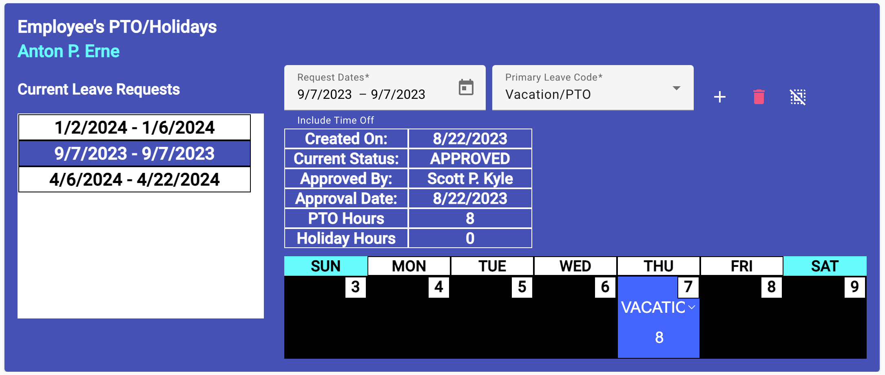
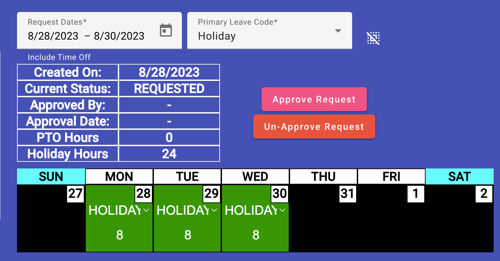

Leave Approval View
(Site Scheduler/Leadership only)
After a leave request is created and placed by the creator in the approval
cue, an email was sent to the site's approval authorities. As an approver,
site leadership and scheduler, you open the Leave Approval view (shown below)
to review and possibly approve the requestor's leave.

- CLick on the leave you want to review and possibly approve from the
list provided on the left side. The selected leave will display in the
leave request editor (right side).
-
You can make changes to their leave request, adjusting the overall
dates, and/or each day's leave code and hours.
-
You also have two choices for leave approval/disapproval. When you
approve a leave,

-
Approve Leave - click the "Approve Request" button and the leave is
set to a status of approved. All the request's leave days will added
to the employee's leave list and an email will be sent to their
login email address telling them of the approval.
-
Unapprove Leave - click the "Un-Approve Request" button and
the leave request will open a dialog to allow you to add a comment
as to why the request was unapproved. The comment will be added
to the request and an email will be sent to the requestor telling
them of the return and the reason for it.
Site Employee Leave Information
Editing the Site Attributes